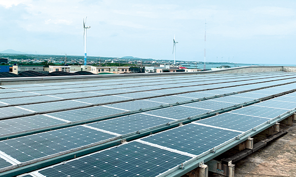

서울교통공사는 서울 지하철 1~8호선, 9호선 2~3단계 구간을 운영하는 도시철도 운영기관인 지방공기업으로, 안전 운행과 시민 편익을 최우선 가치로 삼아 시민 누구나 편리한 대중교통 서비스를 누릴 수 있도록 항상 최선을 다하고 있다. 최근에는 역사 내 상업광고, 상가 임대 등 기존 수익 사업뿐 아니라 물품보관함 설치・생활물류센터 조성 등 지하철역에서 다양한 생활물류 서비스를 제공하고 있으며, 국내 도시철도 운영기관 최초로 물류사업 상표 등록을 완료하여 시민체감형 생활편의 서비스를 제공하기 위해 노력하고 있다.
글 오찬희(서울교통공사 신사업처 사업개발팀 대리)
서울교통공사 물류사업 추진 배경 및 필요성
급격한 사회 변화에 따른 도심 물류 문제가 지속적으로 발생
최근 1인가구 증가, 전자상거래 활성화, 코로나19 장기화 등으로 인해 비대면 소비문화가 정착됨에 따라 도심 내 택배물동량이 급증하고 있다. 통계 데이터에 따르면 2014년 대비 2020년 총 택배물동량은 약 2배 이상 증가했으며, 국민 1인당 사용하는 택배 횟수가 연평균 약 65개에 달한다고 한다. 이러한 택배물동량의 증가는 도심으로 진입하는 화물차량의 증가로 이어지며, 이는 교통혼잡 및 교통사고 증가, 미세먼지 발생 등 도심 내 치명적인 문제점을 야기할 수 있다. 그러나 택배물동량 증가 추이에 비해 서울시 도심 내 물류 부지는 턱없이 부족한 상황이며, 그나마 남아있던 유휴부지마저 대부분 주택공급부지로 활용되고 있다.
도로 중심의 물류 체계에서 도시철도 중심의 물류체계로 전환 필요
도심물류 문제점에 대한 해결책으로 서울교통공사(이하 공사)는 도시철도 인프라를 활용하여 도로 중심의 물류 체계를 도시철도 중심의 물류 체계로 전환하려는 계획을 세웠다. 도시철도 기반의 물류 체계란 차량기지와 지하철역, 화물전용열차 등 도시철도 인프라가 하나의 물류 네트워크로 연결된 물류시스템을 뜻한다. 서울 도심 내 물류 인프라로 개발할 수 있는 도시철도 인프라는 차량기지와 지하철역의 유휴공간 및 폐차 예정 전동차로, 물류시설로 개발할 수 있는 차량기지 및 지하철역의 유휴공간은 약 9만 평에 달하며, 도심 내 화물운송 기능을 담당할 수 있는 화물 전용열차로 개조할 수 있는 폐차 예정 전동차량도 234량을 보유하고 있다. 공사는 이를 활용한다면 도시철도 인프라가 도심 내 물류 인프라로서의 기능을 충분히 수행할 수 있을 것이라 판단하였고, 2017년부터 본격적으로 도시철도 기반의 물류 체계에 대한 연구를 진행하고 있다.
물류사업 추진을 위한 법·제도 개선 등 적극행정 노력
2014년 공사는 정관 및 도시철도법 개정을 통해 부대사업의 범위에 물류사업을 추가하여 공사가 물류사업을 추진할 수 있는 근거를 마련하였다. 또한 2020년 개발제한구역 내 차량기지에 택배분류시설 개발을 허용할 수 있도록 ‘개발제한구역특별법 시행령’이 개정되었으며, 정부 및 서울시의 주요 물류계획에 도시철도 기반의 물류체계가 주요 정책으로 채택되는 등 물류사업 추진을 위한 행정적 움직임도 활발히 이루어지고 있다.
도시철도 기반 물류 체계 도입을 위한 로드맵 실행
역사 내 도시철도 생활물류 서비스 개발 및 운영
도시철도 기반의 물류 체계 도입을 위한 첫 단계는 역사 내 도시철도 생활물류 서비스 개발 및 운영이다. 현재 공사에서 추진하고 있는 도시철도 물류서비스는 크게 물품보관함 운영사업과 생활물류센터 조성사업으로 나뉜다. 물품보관함은 가방, 쇼핑백 등 소형물품을 단시간 보관할 수 있는 서비스이며, 생활물류센터는 여행캐리어 공항 배송, 0.3평 크기의 개인창고 장기 대여, 택배 접수 등 단순 물품 보관 이외에 다양한 생활물류서비스를 제공하는 공간이다.
서울 지하철 전 역사 물품보관함 설치 및 운영
지하철역 물품보관함(이하 또타라커)은 현재 서울지하철 1~8호선, 9호선 2~3단계 전 역사(279개역, 총 5,541함)에 설치・운영되고 있다. 기존에는 사업자 임대 방식이었으나 2017년 공사 직영 운영으로 전환, 보관함 설치 역사를 200개에서 279개 역사로 늘리고, 이용요금을 인하하는 등 시민의 편의성을 높였다. 특히 코로나19의 확산 이후 시민들의 안전한 ‘또타라커’ 이용을 위해 물품보관함 예약, 결제, 민원 상담까지 비대면으로 이용할 수 있는 전용 앱을 개발하기도 했다. 향후에는 퀵서비스, 택배접수 및 배송 등 다양한 물류서비스도 이용할 수 있도록 앱을 보완해 나갈 예정이다.
지하철역 유휴공간 활용 생활물류센터 조성
생활물류센터는 여행캐리어 보관 및 공항 배송, 개인창고 장기 대여 등 다양한 생활물류서비스를 제공하기 위한 공간이다. 물품보관함이 서울 지하철 전 역사에 설치된 것과 달리 생활물류센터는 역사 주변 가구 수, 직장 인구, 유통, 문화시설 현황 등 세부적인 상권데이터 분석을 통해 선정된 사업대상지에 주로 마련되었다. 공사는 2019년부터 올해까지 대합실 유휴공간과 장기 공실상가 등 총 280평 규모의 역사 유휴공간을 활용, 홍대입구역・명동역・이수역 등에 생활물류센터 20개소를 조성하였다. 외국인 등 관광객의 이용 비중이 높은 역사에는 캐리어 등 소화물을 단기 보관하고 공항으로 배송까지 할 수 있는 유인형 생활물류센터(이하 또타러기지)를 설치했다. 또한 1인가구 등 주거비율이 높은 역사에는 개인 취미용품, 계절의류 등을 장기 보관할 수 있는 무인형 생활물류센터(이하 또타스토리지)를 조성하여 역사 특성에 따라 맞춤형 물류 서비스를 제공하고 있다.

역사 내 시민체감형 생활 물류 서비스 제공
‘또타러기지’-지하철역 여행캐리어 보관 및 공항배송 서비스
‘또타러기지’는 여행객의 관광편의 제공을 위해 공사에서 제공하고 있는 여행캐리어 보관 및 공항배송 서비스로, 전용 웹페이지 또는 현장 안내데스크를 통해 이용할 수 있다. 2019년 12월 2호선 홍대입구역에서 최초로 서비스가 시행되었으며, 현재는 서울역, 강남역 등을 포함해 7개소를 운영하고 있다. 보관된 캐리어는 고객의 항공 일정에 따라 전용 화물차량으로 공항 출국장까지 최종 배송되는데, 배송 단계의 위험도를 최소화하기 위해 물류전문기관과 업무 협약을 체결하여 원활하게 배송할 수 있도록 기반을 마련하였다. 코로나19 확산 전까지 월평균 캐리어 보관 건수는 4,000건, 공항 배송 건수가 160건에 이를 만큼 이용이 많았다. 특히 외국인 관광객들에게 좋은 평가를 받았던 물류 서비스로, 현재는 코로나19 장기화로 캐리어 공항배송 서비스를 일시적으로 중단했으나 내년부터 단계적으로 서비스를 재개할 예정이다.
‘또타스토리지’-지하철역 개인창고 장기대여 서비스
‘또타스토리지’는 1인가구, 소상공인들의 계절의류・취미용품・서류・재고 등을 장기간 보관할 수 있는 개인창고 대여 서비스다. 이용요금은 0.3평형 기준 월 79,000원으로 타사 대비 약 25% 저렴하며, 이용 기간에 따라 최대 20%의 할인율을 제공하고 있다. ‘또타스토리지’는 전용 앱(또타라커)을 통해 100% 비대면 무인시스템으로 운영되며, 이용자는 앱에서 결제/출입 및 물품 보관까지 365일 지하철 운영시간 내 자유롭게 이용할 수 있다. 2020년 11월 3개소 시범운영이 성공적으로 마무리되어 2021년 서울시에서 출자 예산을 지원받는 등 지속적으로 확장하고 있는 사업으로, 현재 서울 지하철 내 13개소에 약 220개 개인 창고가 설치되어 있다.
생활물류센터 조성 전
답십리역 장기 공실상가 외관
생활물류센터 조성 후
답십리역 생활물류센터 ‘또타스토리지’ 외관 및 내부
도시철도 기반의 물류 체계 구축을 위한 지속적인 노력
신규 생활물류 서비스 기획 및 도시철도 인프라 개발 국가 R&D 수행
공사는 2024년까지 도심 내 생활물류센터를 최대 50개소로 확대하고, 택배 접수 및 배송・퍼스널 모빌리티 전문보관 등 다양한 생활물류 서비스를 개발할 예정이다. 또한 국가 R&D 수행 등을 통해 차량기지 내 대형 물류센터 개발 및 화물 전용열차 개발 등 도시철도를 활용한 도심 내 화물의 간선배송을 구현하기 위한 노력도 이어간다.
서울교통공사 김상범 사장
“사업을 처음 시작할 때에는 ‘지하철은 사람을 싣고 나르는 곳이다, 물류 사업은 불가능하다,
시민들에게 도움이 되지 않을 것이다’라는 등의 부정적 의견이 많았으나, 구성원들 간의 적극적인
소통과 노력으로 문제를 해결해 성공적 결과를 이끌어낼 수 있었습니다.
21세기 지하철은 단순 여객운송만이 아닌 지역 생활의 중심으로 자리잡아야 합니다.
공사는 사회 변화에 맞춰 생활물류 사업을 추진하고 앞으로도 현실에 안주하지 않고
더욱 혁신적인 노력을 통해 시민 편의성 증진과 복합 부가가치를 창출할 것입니다.
이를 통해 공기업으로서 지역 경제에 활력을 불어넣을 수 있도록 최선을 다하겠습니다.”